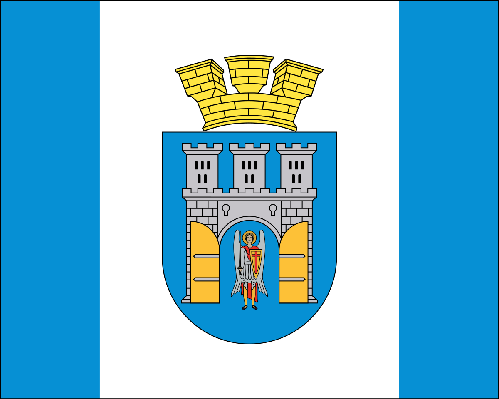
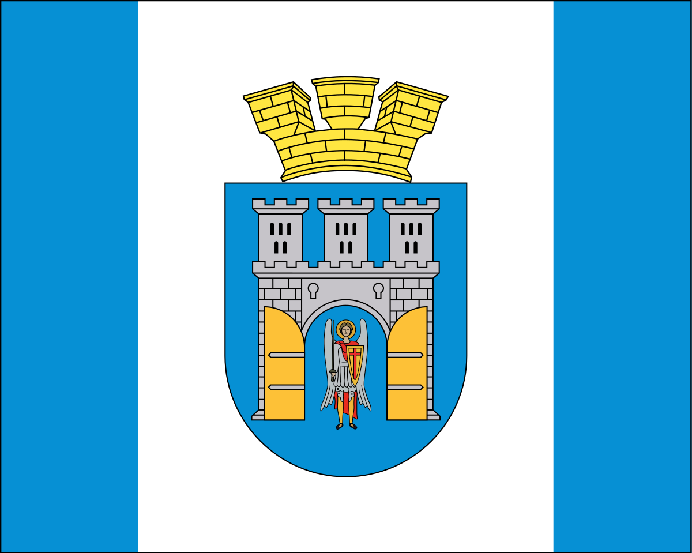

Іва́но-Франкі́вськ — місто в Україні, обласний центр
Івано-Франківської області, економічний і культурний центр
Прикарпаття. Один із трьох головних центрів історико-географічного
регіону Галичина. Назване 1962 року на честь Івана Франка. Держстат
опублікував інформацію про 2001 рік, згідно з якою Івано-Франківщина
стала однією з найбільш україномовних областей. Дані отримувалися
під час опитування населення 2001 року в різних населених пунктах.
Жителі кожної з областей вказували свою рідну мову,
Івано-Франківську — у лідерах серед україномовних жителів.
Мешканці міста були активними учасники протестів Помаранчевої
революції та Революції гідності. 21 листопада 2013 року, одночасно з
мешканцями Донецька, Львова, Ужгорода та інших міст України,
франківчани виходять на мітинги на підтримку Євромайдану. 25
листопада студенти Івано-Франківська оголосили вимогу щодо відставки
міністра освіти та науки Дмитра Табачника, скасування платних послуг
у закладах вищої освіти, і дотримання положення про цілодобовий
доступ студентів до гуртожитків. 30 листопада, за
інформацією тернопільської газети «За Збручем», на західні області
України виїхали автобуси із «Беркутом» з Криму та з Києва. 1
грудня 2013 року в центрі міста пройшло велике віче, у якому взяло
участь 15 тисяч осіб.
 
